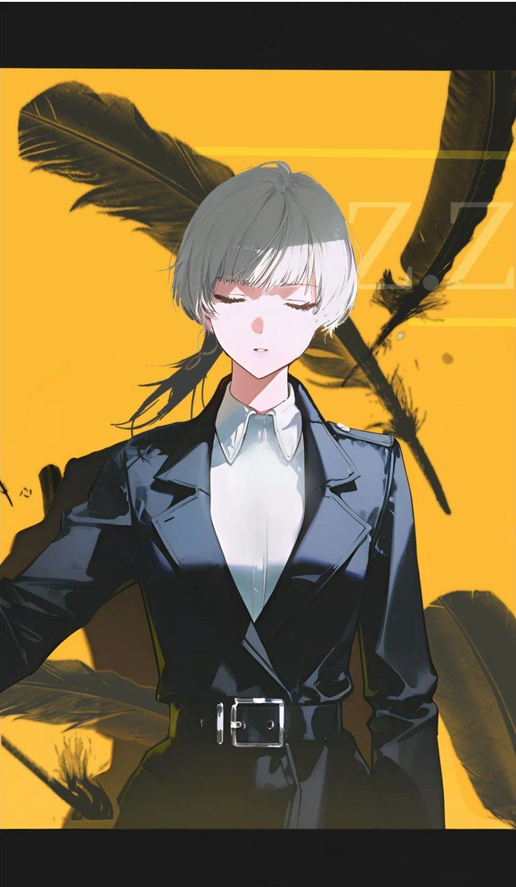

GACC-P-014
内部传阅 · 限制级
Zara Zermis
GACC-P-014 · 职员档案

- 姓名
- Zara Zermis
- 性别
- 女
- 年龄
- 31
- 国籍
- 美国
- 职位
- 机动特遣队-焚化者队员
- 擅长
- 极端环境作战与生还、安保指挥与武装调度、贴身护卫与近距离防卫、战场侦察与态势感知、爆破与引燃物处理、心理压迫与审讯、创伤耐受与情绪压制、现场痕迹识别
- 权限等级
- Lv.3 · 行动
- 行动报告
- 行动报告→
经历档案
Zara Zermis 为 Zermis 家族次女，长期处于其姐泽妮娅的支配之下；入伍半年后编入 SOWT 部队，次年编入第 160 特种作战航空团，因对湿度、风向等环境条件的超常敏感度与纵火能力著称，四年间屡屡在极端作战环境下生还，被誉为「奇迹第五人」。
退役后入职家族安保公司，负责指挥调动集团武装力量，并担任泽妮娅的贴身护卫。
泽妮娅主导的一场集会中，现场突然升腾原因不明的黑色火焰，火灾吞没现场；官方定性为严重人为失误，泽妮娅死亡。
其后其依家族安排以泽妮娅的身份接手集团，完成股权转让、法人变更与债务切割，原身份自家族全部档案中抹除。
其主动接受 GACC 政审与招募，通过后入职焚化者，任队员。
备注
该员沉默寡言，做事较真，敏锐坚韧；对部分事务无法释怀、斤斤计较，会因此产生无名怒火并针对特定的人与事。
其味觉、痛觉与嗅觉均出现麻木迹象；本人偏好口感柔软的食物，尤其面包，并以为无人察觉此事。
关联案卷附录：
案号 SEC-2022-876 · 等级 2 级·存疑
形态：一团极小的黑色火苗，大约在 1 立方厘米，最大的燃烧范围无法界定。
现场：类木头人，物体运动越快，火势越大，破坏越大。
处置：封存在密闭设施内。
记录：被火焰掠过的物品，连灰烬都没有留下。